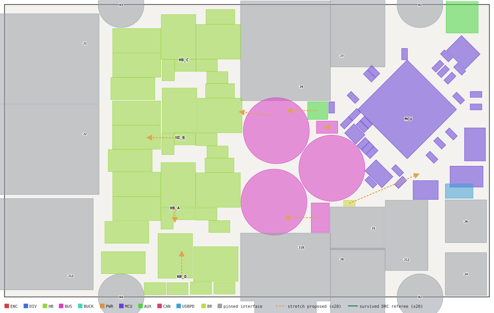
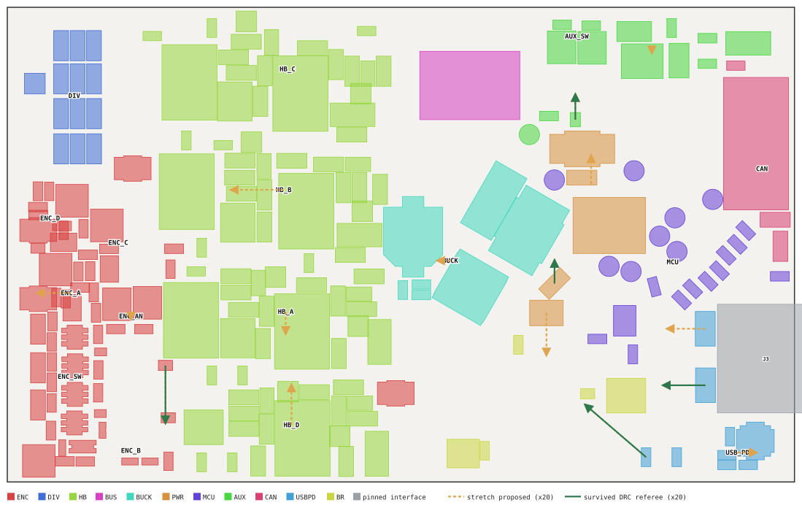
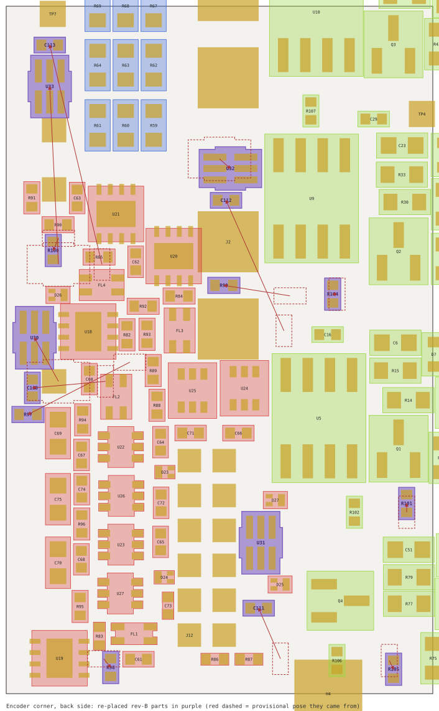
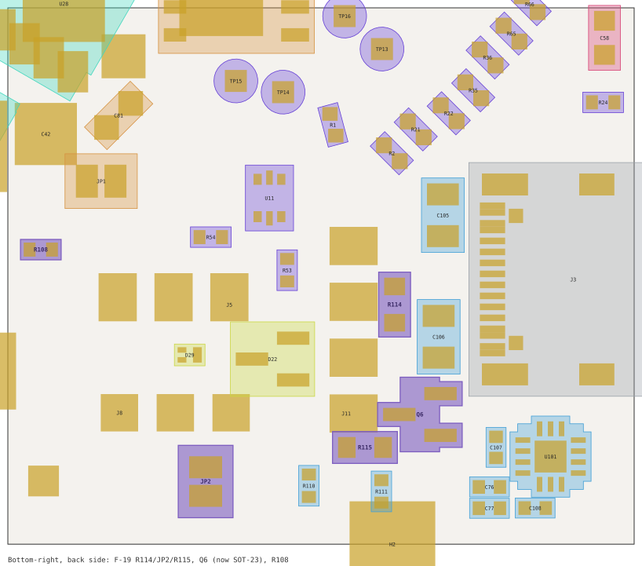
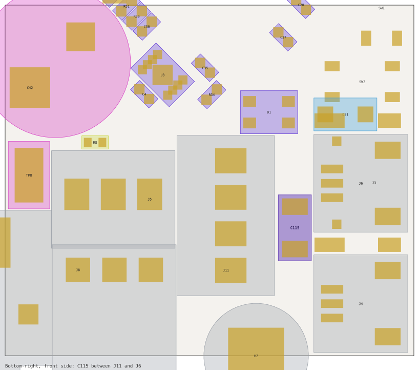
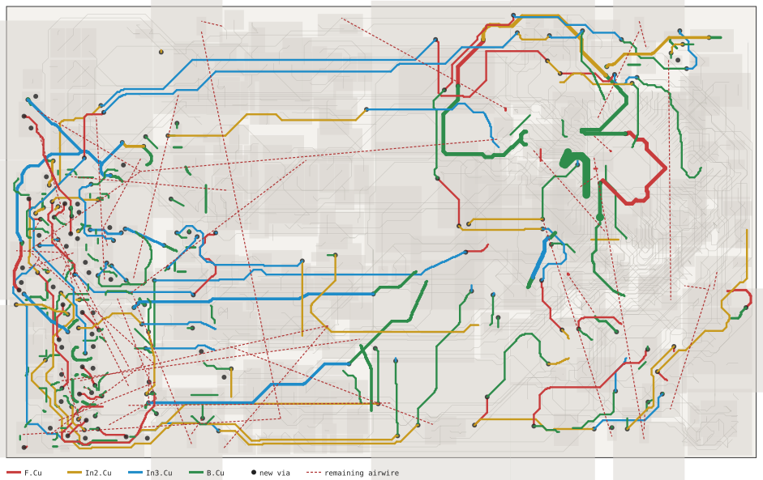

Module Stretch & Rev-B Routing
Carve the board into logical modules · stretch the seams by a small amount · place and route the rev-B parts · 2026-08-20
check_sync IN SYNC — and Freerouting then took the airwire count from 251 to 54.
1 · The modules
Two sources were combined: the designer's own grouping (symbols that sit together on the schematic sheet — power, the four bridges, the encoder fabric, CAN, sense dividers) and board XY proximity across both sides, because the stretch field is one 2-D field for the whole board and a front part over a back part must belong to the same rigid body. Leaves are the rigid units; parents group them for reading. The encoder fabric is split per channel (each SIT3088 + choke + termination + pulls, with its new switch/cap/pull) plus the hall/I²C switch column; the half-bridges stay whole (FETs/shunt/TVS on the front, EG3113 + gate resistors + INA240 on the back are one gate loop each); loose parts on the sparse right half (bulk caps, TVS, jumpers, test points) are their own leaves.


| Parent | Leaf | Parts | Sides | What it is |
|---|---|---|---|---|
| ENC | ENC_D | 10 | B | channel D: SIT3088 + choke + term/pulls + TVS (+U33/C113/R100) — U21 FL4 R85 R90 R91 C63 D26 U33 C113 R100 |
| ENC_C | 9 | B | channel C: SIT3088 + choke + term/pulls (+U32/C112/R99) — U20 FL3 R84 R92 R93 C62 U32 C112 R99 | |
| ENC_A | 9 | B | channel A: SIT3088 + choke + term/pulls (+U30/C110/R97) — U18 FL2 R82 R88 R89 C60 U30 C110 R97 | |
| ENC_B | 9 | B | channel B: SIT3088 + choke + term/pulls (+U31/C111/R98) — U19 FL1 R83 R86 R87 C61 U31 C111 R98 | |
| ENC_SW | 19 | B | hall/I2C switch column: 6× TS5A3159, filter caps, 2× TVS — U22 U23 U26 U27 C64 C65 C67 C68 C69 C70 C72 C73 C74 C75 … | |
| ENC_AN | 4 | B | ext-analog switches U24/U25 + caps — U24 U25 C71 C66 | |
| ENC_D27 | 1 | B | I2C/MOT_TH TVS — D27 | |
| ENC_D25 | 1 | B | channel C TVS — D25 | |
| DIV | DIV | 13 | B | phase/bus voltage-sense dividers (0.1%) + TP7 — R59 R60 R61 R62 R63 R64 R67 R68 R69 R70 R71 R72 TP7 |
| HB | HB_C | 32 | B/F | half-bridge C: FETs/shunt/TVS front, EG3113 + gate R + INA240 back — CL1 CH1 R56 R55 D17 C44 C34 C33 R52 R48 C8 U7 U10 Q3 … |
| HB_B | 32 | B/F | half-bridge B — BL1 BH1 R40 R39 D13 C26 C25 R38 R37 C1 U6 U9 Q2 C28 … | |
| HB_A | 31 | B/F | half-bridge A — AL1 AH1 R23 R20 D9 C9 C7 R18 R17 U1 U5 Q1 C10 C2 … | |
| HB_D | 26 | B/F | half-bridge D (brake-chopper leg) — CL2 CH2 D21 C54 C53 R81 R80 U12 Q4 C48 C51 C55 TP9 TP10 … | |
| BUS | C80 | 1 | F | bulk electrolytic — C80 |
| C42 | 1 | F | bulk electrolytic — C42 | |
| C39 | 1 | F | bulk electrolytic — C39 | |
| D5 | 1 | B | bus TVS SMDJ64A — D5 | |
| TP8 | 1 | F | test point — TP8 | |
| C47 | 1 | F | 10 µF — C47 | |
| BUCK | BUCK | 7 | B | Vdrive buck XL7005A + D4 + L3 + C11 + feedback — U28 D4 L3 C11 C3 R5 R6 |
| PWR | PWR_OR | 3 | B | LTC4359 + PowerPAK FET + C78 — U29 Q5 C78 |
| JP1 | 1 | B | power-path jumper — JP1 | |
| C81 | 1 | B | 1 µF 100 V — C81 | |
| MCU | MCU | 53 | B/F | RP2350 + crystal + flash + decoupling + USB ESD + PWM pulldowns/test points — U8 Y1 C13 C14 R26 U3 C4 R34 L2 R50 R51 C17 C18 C21 … |
| AUX | AUX_LDO | 3 | B | 3.3 V LDO SPX3819 + caps — U4 C5 C12 |
| AUX_SW | 4 | B | ext-analog ADC switches U13/U14 + caps — U13 U14 C49 C50 | |
| R112 | 1 | B | TERM_SW pull — R112 | |
| C114 | 1 | B | LED_VDD cap — C114 | |
| D30 | 1 | B | WS2812 supply diode — D30 | |
| R113 | 1 | B | E-stop pull — R113 | |
| Q6 | 1 | F | E-stop FET (DNP) — Q6 | |
| D28 | 1 | B | daisy UART TVS — D28 | |
| R49 | 1 | B | thermistor divider — R49 | |
| TP20 | 1 | B | TERM_SW test point — TP20 | |
| U15 | 1 | F | thermistor switch — U15 | |
| CAN | CAN | 4 | B | CA-IS3052 isolator + decoupling (F-19 R114/JP2/C115/R115 to land here) — U16 C56 C57 C58 |
| USBPD | USB_PD | 5 | B | FUSB302 + CC/decoupling caps — U101 C107 C108 C76 C77 |
| C105 | 1 | B | VBUS cap — C105 | |
| C106 | 1 | B | VBUS cap — C106 | |
| R110 | 1 | B | ENC_C_SW pull — R110 | |
| R111 | 1 | B | ENC_D_SW pull — R111 | |
| D31 | 1 | F | VBUS TVS SMF24A — D31 | |
| BR | VENC | 2 | B | V_ENC switch U17 + C59 — U17 C59 |
| R108 | 1 | B | ENC_A_SW pull — R108 | |
| D29 | 1 | B | daisy UART TVS — D29 | |
| R8 | 1 | F | E-stop conn pull — R8 | |
| D22 | 1 | B | CAN ESD diode — D22 | |
| PIN | 16 leaves | 16 | J1/J2 phase XT30s, J12 encoder, J9/J10 power, J3 USB-C, J4/J6 JST, J5 E-stop, J7/J8 daisy-chain, J11 CAN, H1–H4 mounting holes — never move |
18 rev-B parts whose pose was provisional (C110 C111 C112 C113 Q6 R100 R101 R103 R104 R105 R108 R97 R98 R99 U30 U31 U32 U33) are members of their leaves but excluded from the leaf geometry — they are re-placed in §4.
2 · How far can each module slide? (exact polygons)
For every movable leaf, moving it alone: the largest translation in ±x/±y (mm) before any same-side courtyard pair or any shared-copper-layer pad pair (rule 0.18 mm, mounting holes 1.4 mm local clearance) of another leaf gets closer than it is today (seams under 0.4 mm may not shrink at all; tuck-unders that ship overlapping and are DRC-excluded — C80/J9, BH1/J9, C39/J10 — are grandfathered), and before a courtyard crosses the 0.3 mm edge inset. Exact courtyard/pad polygons from pcbnew, bisection to 0.1 µm. 0.00 means jammed.
| Leaf | +x (east) | −x (west) | +y (south) | −y (north) | Leaf | +x | −x | +y | −y |
|---|---|---|---|---|---|---|---|---|---|
| ENC_D | 0.00 | 0.00 | 0.00 | 0.00 | AUX_LDO | 0.00 | 0.64 | 2.00 | 0.00 |
| ENC_C | 0.00 | 0.00 | 0.00 | 0.00 | AUX_SW | 0.64 | 2.00 | 1.45 | 0.65 |
| ENC_A | 0.00 | 0.17 | 0.00 | 0.00 | R112 | 1.71 | 1.10 | 0.17 | 0.00 |
| ENC_B | 0.00 | 0.00 | 0.00 | 0.00 | C114 | 0.57 | 0.49 | 2.00 | 1.18 |
| ENC_SW | 0.00 | 0.00 | 0.00 | 0.00 | D30 | 1.73 | 0.48 | 0.18 | 1.78 |
| ENC_AN | 0.00 | 0.00 | 0.02 | 0.00 | R113 | 0.48 | 0.00 | 1.18 | 0.00 |
| ENC_D27 | 2.00 | 1.13 | 2.00 | 0.00 | Q6 | 2.00 | 2.00 | 2.00 | 2.00 |
| ENC_D25 | 0.45 | 1.41 | 2.00 | 2.00 | D28 | 2.00 | 0.77 | 0.01 | 0.89 |
| DIV | 1.48 | 0.73 | 1.38 | 1.68 | R49 | 0.77 | 0.63 | 0.37 | 0.76 |
| HB_C | 0.00 | 0.14 | 0.00 | 0.00 | TP20 | 0.60 | 1.12 | 2.00 | 0.37 |
| HB_B | 0.00 | 0.26 | 0.00 | 0.00 | U15 | 0.00 | 0.00 | 0.00 | 0.00 |
| HB_A | 0.00 | 0.00 | 0.00 | 0.00 | CAN | 0.00 | 0.00 | 0.59 | 0.18 |
| HB_D | 0.00 | 0.00 | 0.00 | 0.31 | USB_PD | 1.39 | 0.00 | 0.00 | 0.50 |
| C80 | 0.00 | 0.00 | 0.00 | 0.00 | C105 | 0.00 | 0.60 | 1.74 | 0.63 |
| C42 | 0.00 | 0.00 | 0.00 | 0.00 | C106 | 0.00 | 1.68 | 2.00 | 1.74 |
| C39 | 0.00 | 0.00 | 2.00 | 0.00 | R110 | 0.00 | 2.00 | 0.00 | 1.41 |
| D5 | 1.52 | 2.00 | 0.42 | 1.70 | R111 | 2.00 | 1.13 | 0.00 | 1.31 |
| TP8 | 0.00 | 0.28 | 0.00 | 0.00 | D31 | 0.00 | 0.20 | 0.00 | 0.00 |
| C47 | 0.00 | 0.73 | 0.00 | 0.00 | VENC | 1.84 | 2.00 | 0.78 | 1.76 |
| BUCK | 0.00 | 0.00 | 0.00 | 0.00 | R108 | 2.00 | 2.00 | 2.00 | 2.00 |
| PWR_OR | 0.00 | 0.00 | 0.00 | 0.01 | D29 | 0.76 | 2.00 | 0.85 | 0.60 |
| JP1 | 2.00 | 0.67 | 2.00 | 0.00 | R8 | 2.00 | 0.00 | 0.00 | 0.00 |
| C81 | 2.00 | 0.21 | 0.00 | 0.12 | D22 | 0.34 | 0.76 | 0.71 | 0.84 |
| MCU | 0.00 | 0.00 | 0.00 | 0.00 |
Seam census: 46 cross-leaf courtyard seams under 0.4 mm (6 touching or overlapping, of which the tuck-unders C80/J9 −0.47, BH1/J9 −0.25 and HB_C/J9, C39/J10, MCU/D31, MCU/J7 at 0.00 are all DRC-excluded in the project). The chains are what matters: HB_C and HB_B are flush against J9's courtyard, HB_B→BUCK (0.16)→C42/C80→PWR_OR→MCU (0.06 to TP17)→J3/J7/J11; ENC→J12 pads (0.06), J2's XT30 pegs (0.00) and the bottom edge (0.16). Everything from the encoder edge to the USB edge is one wall-to-wall chain pinned at both ends.
3 · The stretch: LP solve, warp, DRC referee
Solve. Sequential LP over the leaf translations (scipy HiGHS): maximise the summed opening of the tight seams (capped at T=0.4 mm) minus a small L1 penalty on motion, subject to the stretch-only floors above, edge inset, |v| ≤ 0.6 mm and a 0.1 mm trust region; exact polygon re-check and re-linearisation each step. Result: 21 leaves move, |v| 0.02–0.60 mm, 17 of 44 tight seams open (mean +0.056 mm, best +0.33 JP1/C81, +0.28 TP8/J5, +0.24 MCU/U15, +0.23 R8/J5, +0.23 C80/C42, +0.21 C106/J3, +0.19 C105/J3, +0.17 ENC_A/ENC_AN, +0.17 ENC_D27/HB_A, +0.19 HB_B/J9), no seam shrinks. A greedy single-leaf coordinate search finds a similar picture (22 seams, same magnitudes). The numbers are the honest size of the slack: tenths of a millimetre at a handful of seams.
| Leaf | Proposed (dx, dy) mm | Survived referee | Leaf | Proposed | Survived |
|---|---|---|---|---|---|
| ENC_A | (-0.17, 0) | reverted | JP1 | (0, +0.21) | reverted |
| ENC_AN | (0, +0.02) | reverted | C81 | (0, -0.12) | kept |
| ENC_D27 | (0, +0.28) | kept | AUX_LDO | (0, +0.01) | reverted |
| HB_B | (-0.26, 0) | reverted | D28 | (0, -0.13) | kept |
| HB_A | (0, +0.11) | reverted | U15 | (-0.24, 0) | reverted |
| HB_D | (0, -0.20) | reverted | USB_PD | (+0.10, 0) | reverted |
| C80 | (-0.26, -0.03) | reverted | C105 | (-0.19, 0) | reverted |
| TP8 | (-0.28, 0) | reverted | C106 | (-0.21, 0) | kept |
| C47 | (-0.02, 0) | reverted | R110 | (-0.30, -0.26) | kept |
| BUCK | (-0.07, 0) | reverted | R8 | (+0.55, -0.23) | reverted |
| PWR_OR | (0, -0.14) | reverted |
Warp. Applying a rigid translation per leaf is easy for footprints; the question is the copper. A first attempt blended every copper point by an inverse-distance field over the leaf territories — and produced 445 new violations, almost all inner-layer buses and via farms that happened to sit in a gap between two leaves and got sheared. Any gradient across a rule-pitch bundle is illegal: two 0.2 mm tracks at 0.18 mm gap lose 2 µm of clearance at a 5.7° shear and 16 µm at 17°, and this board's corridors ship at exactly the rule. The second model owns copper by connectivity: a track end on a pad is pinned to that pad's leaf; every other track end or via is a free node of the copper graph and takes the harmonic (length-weighted neighbour-average) interpolation of the pinned values, so a trace from module A to module B stretches along itself, a bundle of parallel A–B traces stays parallel, copper wholly inside one module is byte-identical, and pad-less via farms move rigidly as groups. No segment is split. On the full LP vector set this warp touched 164 tracks and 21 vias in 13 seam clusters (335 clusters rigid) — and still left 313 new violations, because seam copper on this board runs past third-party copper at rule pitch, not just between its two modules.
Referee. Real kicad-cli DRC on the warped copy, diffed against the pre-warp baseline with position-independent signatures; each new violation is blamed on the moved leaves it names or sits inside; the worst leaf is reverted and the loop repeats until the warp is DRC-neutral:
| Round | Leaves moving | New violations | Unconnected | Blame (top) | Reverted |
|---|---|---|---|---|---|
| 0 | 21 | 313 | 238 | BUCK 65, HB_A 60, PWR_OR 59, C105 23 | BUCK |
| 1 | 20 | 313 | 238 | U15 62, HB_A 60, PWR_OR 59, C105 23 | U15 |
| 2 | 19 | 254 | 238 | HB_A 59, PWR_OR 36, C47 29, C105 23 | HB_A |
| 3 | 18 | 220 | 238 | HB_D 48, PWR_OR 34, C47 29, C105 22 | HB_D |
| 4 | 17 | 151 | 238 | PWR_OR 34, C47 29, C105 22, HB_B 10 | PWR_OR |
| 5 | 16 | 144 | 238 | C47 31, C105 22, HB_B 10, C80 7 | C47 |
| 6 | 15 | 144 | 238 | C105 22, HB_B 10, C80 7, R8 7 | C105 |
| 7 | 14 | 124 | 238 | HB_B 10, C80 7, R8 7, TP8 7 | HB_B |
| 8 | 13 | 87 | 238 | R8 7, TP8 7, USB_PD 6, ENC_A 5 | R8 |
| 9 | 12 | 87 | 238 | TP8 7, USB_PD 6, ENC_A 5, C80 4 | TP8 |
| 10 | 11 | 81 | 238 | USB_PD 6, ENC_A 5, C80 4, JP1 4 | USB_PD |
| 11 | 10 | 58 | 238 | ENC_A 5, C80 4, JP1 3, C81 1 | ENC_A |
| 12 | 9 | 54 | 238 | C80 4, JP1 3, ENC_AN 2, C81 1 | C80 |
| 13 | 8 | 14 | 238 | JP1 3, ENC_AN 2, C81 1 | JP1 |
| 14 | 7 | 14 | 238 | ENC_AN 2, C81 1 | ENC_AN |
| 15 | 6 | 0 | 238 | — |
4 · Re-placing the rev-B parts (and landing F-19)
The 17 rev-B parts that were dropped provisionally in the corner shake (term switches U30–U33 with their caps C110–C113 and pull-ups R97–R100, pull-downs R101/R103/R104/R105/R108 that had landed on vias, and Q6 over the top edge) plus the four F-19 parts (R114/JP2 termination, C115/R115 barrier stitch) were placed by a pose scanner on real KiCad geometry: every 0.125–0.25 mm × 90° pose in a window around an anchor, hard constraints = same-side courtyard (with DRC's 45 µm outline inflation), other-net pads on a shared copper layer (incl. local clearances), other-net vias under a pad, board-edge inset; soft cost = other-net F/B track segments under a pad (copper to rip), with the USB pair, CAN pair and phase/VMOT copper never rippable. Jobs run sequentially so later parts see earlier ones. Where a part's home pocket had no legal pose (channels D and A are wall-to-wall against J2's pegs and J12's pins, channel B against H4's 1.4 mm keepout) the window was widened: the 1 mm encoder-edge extension from the morph prep is exactly where C110/C113/R97/R100/U30 now live, U33 sits in the divider block's free corner, U32 in the DIV↔channel-C gap, U31 right of J12's pin column.
| Part | From (provisional) | To | Rot | Side | Legal poses | Ripped copper |
|---|---|---|---|---|---|---|
| U32 | (123.75, 97.75) | (124.375, 98.300) | 0 | B | — | — |
| U33 | (114.50, 103.80) | (114.000, 93.600) | 90 | B | — | — |
| C112 | (127.45, 107.60) | (124.125, 100.125) | 0 | B | — | — |
| C113 | (117.00, 103.80) | (114.000, 91.225) | 0 | B | — | — |
| R99 | (127.80, 105.60) | (124.000, 105.000) | 0 | B | — | — |
| R100 | (114.50, 102.30) | (114.200, 103.000) | 90 | B | — | — |
| U30 | (114.50, 110.50) | (113.125, 108.000) | 90 | B | — | {'/ENC_D_P': 1} |
| C110 | (117.20, 110.50) | (113.000, 110.875) | 90 | B | — | — |
| R97 | (118.60, 109.40) | (112.750, 112.400) | 180 | B | — | — |
| U31 | (149.50, 119.75) | (126.125, 119.750) | 90 | B | — | — |
| C111 | (127.25, 126.40) | (126.000, 123.500) | 0 | B | — | — |
| R98 | (117.10, 126.40) | (117.500, 126.900) | 90 | B | — | — |
| R101 | (134.50, 118.00) | (134.500, 117.500) | 270 | B | — | — |
| R103 | (141.00, 107.00) | (143.750, 107.750) | 180 | B | — | — |
| R104 | (130.50, 105.50) | (130.250, 105.500) | 90 | B | — | — |
| R105 | (133.50, 126.50) | (133.750, 127.000) | 90 | B | — | — |
| R108 | (161.50, 115.00) | (161.500, 115.000) | 0 | B | — | — |
| Q6 | new | (178.750, 122.500) | 180 | B | — | — |
| R114 | new | (177.600, 117.500) | 90 | B | — | — |
| JP2 | new | (169.000, 125.550) | 90 | B | — | — |
| C115 | new | (180.200, 119.500) | 90 | F | — | — |
| R115 | new | (176.250, 124.000) | 0 | B | — | — |
Q6 (F-45). The shipped board carried the DNP E-stop 2N7002 on a SOT-89-3 land (5.1 mm courtyard) while the schematic says SOT-23 — the one "known rev-A discrepancy" check_sync had been tolerating. There is no 5×5 mm hole anywhere near the top-right corner, so the board now carries the schematic's SOT-23 (pads 1/2/3 = G/D/S = /E-STOP, /RUN, GND preserved), placed on the back next to J11. check_sync is IN SYNC (323 schematic / 323 board components) with no known exceptions left.
F-19 on the board. R114 (120 Ω) stands vertically in the strip between J11's pin column and C105/C106 (177.6, 117.5), JP2 below D22/J8 (169.0, 125.55) — open by default, bridge for an end-of-bus node. The barrier stitch: C115 (1206, 2 kV) is the only part that will straddle the F-42 cut, placed on the front between J11 and J6 (180.2, 119.5) where the isolated GND_ISO net comes off J11 pin 4; R115 on the back beside J11 pin 1 (176.25, 124.0), wholly on the board-GND side. F-42 (the plane cut) is still open — the stitch is placed where the cut will be drawn.



5 · DRC ladder
| Stage | Violations | Unconnected | Breakdown |
|---|---|---|---|
| rev-B working tree (baseline) | 167 | 238 | hole_clearance 50, clearance 43, solder_mask_bridge 37, shorting_items 26, courtyards_overlap 10, copper_edge_clearance 1 |
| after module stretch (DRC-neutral subset) | 167 | 238 | hole_clearance 50, clearance 43, solder_mask_bridge 37, shorting_items 26, courtyards_overlap 10, copper_edge_clearance 1 |
| after re-placing 17 rev-B parts + 4 F-19 parts + Q6 swap | 75 | 241 | hole_clearance 28, clearance 22, solder_mask_bridge 14, shorting_items 9, via_dangling 2 |
| after corner cleanup (stray vias / pad-collision copper removed) | 6 | 251 | solder_mask_bridge 4, via_dangling 2 |
| after Freerouting + post-route cleanup | 4 | 54 | solder_mask_bridge 4 |
The corner cleanup removed the copper the relaxed corner had been sitting on: 14 stray vias under pads of other nets (GND/+3V3/ENC_A_DATA/ENC_B_DATA/I2C_SW) and 6 track segments inside pad clearance (the C_SENSE pair past the shrunk C40 from F-43, GND_ISO past R53, /ENC_D_P under U18's thermal pad), then nudged R91 and U20 out of J2's peg/pin clearance. What remains before routing is four cosmetic solder-mask bridges between the mounting-hole openings and R106/R109/R111/R112 — and the airwires.
6 · Routing the rev-B nets
Freerouting first. The obvious tool was tried first: every existing track and via locked (they export as (type fix)), DSN out, Freerouting 2.2.4 headless, SES back. On this board it does not finish: with 3,667 fixed items it sat at 10–15 % CPU for 40 minutes without producing a session file (the sibling projects' notes already list "fixed wire brushing a via" and "fixed wire inside a plane" as hang triggers), and a second run died in a HeadlessException. So the airwires were routed in-house.
The in-house router. router.py: 0.1 mm grid on F.Cu / In2 / In3 / B.Cu (In1/In4 are the GND planes and are never routed on). Per net the passable set is an EDT on a per-layer copper raster — distance to other-net copper ≥ w/2 + clearance (net-class clearance of both nets, local clearances, 0.075 mm sampling guard), own pads always enterable where the track width fits inside them, edge inset 0.3, rule areas hard; via sites need that on every copper layer plus hole-to-hole 0.254. Each DRC-unconnected pair is routed cluster-to-cluster by A* with octile moves, via cost, a penalty inside other-net pours (the phase/VMOT pours are hard — they must not be cut), EDT-to-target heuristic; plane nets finish at the first legal via site; routed copper joins the rasters at once. After every round kicad-cli DRC is the referee: any of this run's copper named in a new violation is ripped and the rasters rebuilt. GND was pre-stitched to the planes (40 vias, gnd_stitch.py).
| Round | Airwires at start | Routed | Failed |
|---|---|---|---|
| 0 | 212 | 168 | 44 |
| 1 | 52 | 8 | 44 |
| 2 | 55 | 9 | 46 |
| 3 | 51 | 6 | 45 |
check_sync IN SYNC. The board is still mid-rework — 54 connections remain — but every one of them is now a named, understood item rather than "214 airwires in the corner".
What is left (54). By net: GND 5, /TERM_SW 5, +3V3 4, +1V1 2, /ENC_A_SW 2, /ENC_B_SW 2, /~{USB_BOOT} 2, /ENC_D_SW 2, /ENC_C_N 2, /ENC_D_N 2, /EXT_ANALOG_SW 2, /H3_SW 2, /ENC_A_TRX_A 2, /ENC_B_TRX_A 2, /ENC_C_TRX_A 2, /ENC_C_SW 1, /RUN 1, /ENC_A_DATA 1, /HALL3 1, Vdrive 1, /ENC_D_P 1, /V_ENC 1, /ENC_B_P_SW 1, /EXT_ANALOG1 1, /EXT_ANALOG2 1, /V_SW 1 ….
The router's own diagnostics split them in two kinds. 38 are boxed in: the A* exhausts a few dozen cells in milliseconds because the pad has no exit at all — typically a SIT3088 pin row sitting 0.2 mm from its choke's pads (U20↔FL3, U18↔FL2, U19↔FL1: the relaxed corner left the transceiver/choke pairs nose-to-nose with no 0.56 mm channel for a 0.2 mm track), a pull-down whose GND pad is inside a mounting hole's ring, or a termination-switch pin (U31–U33) facing another part. 7 fail after a real search (the whole reachable region is walled off by at-limit copper). Both kinds are placement problems, not routing problems: the fix is to turn/slide the part, not to search harder.
| Net | Pair | Kind | src cells (passable) | dst cells |
|---|---|---|---|---|
| /ENC_A_DATA | Pad 1 [/ENC_A_DATA] of U18 o ~ Track [/ENC_A_DATA] on B.Cu, | boxed in | 12 (12) | 2067 |
| /ENC_A_TRX_A | Pad 6 [/ENC_A_TRX_A] of U18 ~ Pad 4 [/ENC_A_TRX_A] of U30 | boxed in | 12 (10) | 39 |
| /ENC_B_SW | Track [/ENC_B_SW] on In3.Cu, ~ Pad 1 [/ENC_B_SW] of R109 on | boxed in | 34 (16) | 1461 |
| /ENC_B_TRX_A | Pad 4 [/ENC_B_TRX_A] of FL1 ~ Pad 6 [/ENC_B_TRX_A] of U19 | boxed in | 32 (32) | 21 |
| /ENC_B_TRX_A | Pad 4 [/ENC_B_TRX_A] of U31 ~ Pad 4 [/ENC_B_TRX_A] of FL1 | boxed in | 39 (39) | 32 |
| /ENC_C_N | PTH pad 1 [/ENC_C_N] of J12 ~ Pad 1 [/ENC_C_N] of D25 on B | boxed in | 580 (564) | 11 |
| /ENC_C_N | Pad 1 [/ENC_C_N] of D25 on B ~ Pad 4 [/ENC_C_N] of U25 on B | boxed in | 11 (6) | 26 |
| /ENC_C_SW | Track [/ENC_C_SW] on In2.Cu, ~ Pad 1 [/ENC_C_SW] of R110 on | boxed in | 30 (30) | 3027 |
| /ENC_C_TRX_A | Pad 6 [/ENC_C_TRX_A] of U20 ~ Pad 4 [/ENC_C_TRX_A] of FL3 | boxed in | 18 (12) | 28 |
| /ENC_D_N | Track [/ENC_D_N] on F.Cu, le ~ Pad 2 [/ENC_D_N] of D26 on B | boxed in | 8 (0) | 383 |
| /ENC_D_N | PTH pad 8 [/ENC_D_N] of J12 ~ Pad 2 [/ENC_D_N] of FL4 on B | boxed in | 580 (580) | 383 |
| /ENC_D_P | PTH pad 6 [/ENC_D_P] of J12 ~ Pad 3 [/ENC_D_P] of FL4 on B | boxed in | 580 (580) | 188 |
| /ENC_D_SW | Track [/ENC_D_SW] on In3.Cu, ~ Pad 3 [/ENC_D_SW] of U21 on | boxed in | 40 (32) | 1251 |
| /ENC_D_SW | Pad 1 [/ENC_D_SW] of R111 on ~ Track [/ENC_D_SW] on In3.Cu, | boxed in | 34 (16) | 1251 |
| /EXT_ANALOG1 | Pad 1 [/EXT_ANALOG1] of U24 ~ Track [/EXT_ANALOG1] on In3. | boxed in | 24 (15) | 1136 |
| /EXT_ANALOG2 | Pad 1 [/EXT_ANALOG2] of U25 ~ Track [/EXT_ANALOG2] on In3. | boxed in | 26 (13) | 1250 |
| /EXT_ANALOG_SW | Pad 1 [/EXT_ANALOG_SW] of R1 ~ Pad 6 [/EXT_ANALOG_SW] of U2 | boxed in | 34 (16) | 115 |
| /EXT_ANALOG_SW | Track [/EXT_ANALOG_SW] on B. ~ Track [/EXT_ANALOG_SW] on In | boxed in | 115 (110) | 1230 |
| /H3_SW | Track [/H3_SW] on In3.Cu, le ~ Pad 1 [/H3_SW] of R105 on B. | boxed in | 34 (34) | 1428 |
| /LED_VDD | Pad 1 [/LED_VDD] of C114 on ~ Pad 3 [/LED_VDD] of D1 on F. | boxed in | 63 (61) | 369 |
| /RUN | Via [/RUN] on F.Cu - B.Cu ~ Pad 2 [/RUN] of Q6 on B.Cu | boxed in | 88 (88) | 839 |
| /TERM_A_R | Pad 1 [/TERM_A_R] of U30 on ~ Pad 2 [/TERM_A_R] of R82 on | boxed in | 39 (39) | 35 |
| /TERM_D_R | Pad 1 [/TERM_D_R] of U33 on ~ Pad 2 [/TERM_D_R] of R85 on | boxed in | 52 (39) | 38 |
| /TERM_SW | Track [/TERM_SW] on F.Cu, le ~ Pad 1 [/TERM_SW] of R112 on | boxed in | 34 (16) | 513 |
| /TERM_SW | Pad 6 [/TERM_SW] of U32 on B ~ Pad 6 [/TERM_SW] of U33 on B | boxed in | 52 (36) | 51 |
| /TERM_SW | Pad 6 [/TERM_SW] of U30 on B ~ Pad 6 [/TERM_SW] of U32 on B | boxed in | 39 (39) | 52 |
| /TERM_SW | Pad 6 [/TERM_SW] of U30 on B ~ Pad 6 [/TERM_SW] of U31 on B | boxed in | 39 (39) | 39 |
| /TERM_SW | Track [/TERM_SW] on In3.Cu, ~ Pad 6 [/TERM_SW] of U32 on B | boxed in | 52 (36) | 513 |
| /V_ENC | Track [/V_ENC] on In2.Cu, le ~ PTH pad 4 [/V_ENC] of J12 | boxed in | 580 (572) | 294 |
| /V_SW | Pad 1 [/V_SW] of R101 on B.C ~ Pad 6 [/V_SW] of U17 on B.Cu | boxed in | 30 (24) | 1019 |
| /~{USB_BOOT} | Track [/~{USB_BOOT}] on F.Cu ~ Track [/~{USB_BOOT}] on F.Cu | boxed in | 146 (143) | 23 |
| /~{USB_BOOT} | Track [/~{USB_BOOT}] on F.Cu ~ Track [/~{USB_BOOT}] on F.Cu | boxed in | 23 (17) | 167 |
| GND | Pad 2 [GND] of R115 on B.Cu ~ Pad 2 [GND] of R111 on B.Cu | boxed in | 30 (12) | 25325 |
| GND | Pad 2 [GND] of R106 on B.Cu ~ Via [GND] on F.Cu - B.Cu | boxed in | 30 (12) | 25251 |
| GND | Via [GND] on F.Cu - B.Cu ~ Pad 2 [GND] of R109 on B.Cu | boxed in | 30 (12) | 25416 |
| GND | Track [GND] on B.Cu, length ~ Pad 2 [GND] of R112 on B.Cu | boxed in | 30 (12) | 25347 |
| Net-(Q5-G) | Pad 1 [Net-(Q5-G)] of U29 on ~ Pad 2 [Net-(Q5-G)] of Q5 on | boxed in | 64 (64) | 78 |
| Vdrive | Track [Vdrive] on In3.Cu, le ~ Pad 5 [Vdrive] of U31 on B.C | boxed in | 52 (52) | 20870 |
| /ENC_A_TRX_A | Pad 4 [/ENC_A_TRX_A] of FL2 ~ Pad 6 [/ENC_A_TRX_A] of U18 | walled region | 28 (28) | 12 |
| /ENC_B_P_SW | Pad 3 [/ENC_B_P_SW] of U23 o ~ Via [/ENC_B_P_SW] on F.Cu - | walled region | 24 (18) | 243 |
How to finish. (1) In the encoder corner rotate each choke so its TRX pads face the transceiver's A/B pins (or slide the SIT3088 0.4 mm away from the choke to open a track channel) — the scanner in place_scan.py can evaluate candidate poses, and the router re-runs in under a minute; (2) move the four pull-downs that sit inside the mounting-hole rings (R106/R109/R111/R112) by ~1 mm; (3) re-run router.py and the DRC gate. The phase/VMOT pours were deliberately kept uncut; the five phase-net "airwires" that appeared mid-way in earlier runs (VMOT, /B_P, /B_N, /C_N, /D) were pours the router had split by routing through them — that is why those pours are hard obstacles now.
7 · Tooling
Everything is scripted and lives in hardware/tools/modules/: modules.py (leaf definitions → modules.json), slack.py / relax2.py --probe (per-leaf slack), relax3.py (sequential-LP stretch), warp2.py (connectivity-owned warp), referee.py (DRC referee loop), place_scan.py (pose scanner / placer, also does footprint swaps and new parts), clean_corner.py, route.py (Freerouting round-trip with all existing copper locked), drcdiff.py (position-independent DRC diff), map_modules.py + render_page.py (this page). Geometry: pcbnew 9.0.8 courtyard/pad polygons; oracle: kicad-cli DRC with the project file beside every board copy.